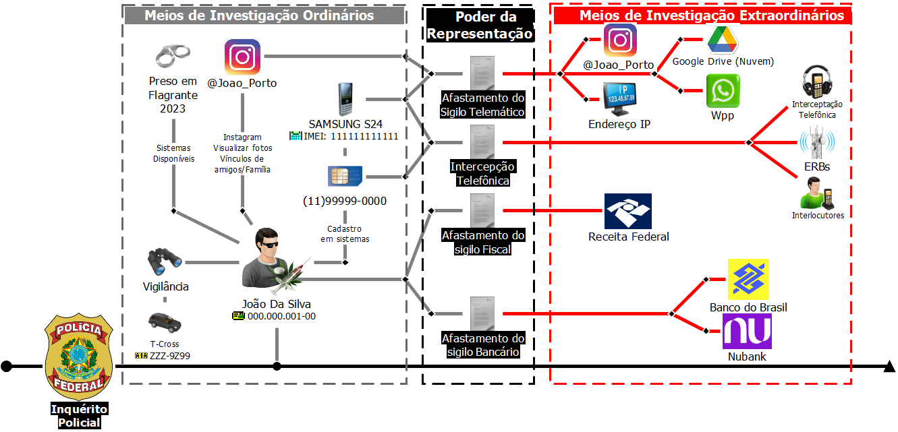

Conforme demonstrado nos capítulos anteriores, a investigação policial é uma atividade complexa e diferida no tempo, desenvolvida com o emprego de diferentes técnicas de obtenção de elementos probatórios, que devem ser utilizadas de forma integrada e metodológica, a partir de critérios de adequação e proporcionalidade, sendo comum inicialmente o emprego dos chamados meios ordinários, como oitivas de testemunhas, diligências externas (vigilâncias, acompanhamentos...), coleta de provas, coletas de câmeras de CFTV, pesquisa em sistemas disponíveis por prerrogativa do cargo, pesquisas em fontes abertas e etc. Tais procedimentos, embora importantes, muitas vezes se mostram insuficientes diante da complexidade da criminalidade contemporânea, marcada por organizações criminosas estrutu radas, utilização de recursos tecnológicos avançados e mecanismos sofisticados de ocultação de provas e ativos ilícitos.
Nesses casos, torna-se necessário recorrer aos chamados meios especiais ou extraordinários de investigação, que se diferenciam dos primeiros por implicarem maior grau de invasividade em direitos fundamentais, sobretudo os relacionados à intimidade, ao sigilo de comunicações, à vida privada e ao patrimônio. São exemplos dessa categoria a interceptação de comunicações telefônicas ou telemá ticas, a quebra de sigilo bancário e fiscal, as buscas e apreensões em domicílios, entre outros que serão apresentados neste capítulo.
A adoção desses meios somente se justifica quando presentes elementos concretos que demonstrem sua necessidade, adequação e proporcionalidade para o esclarecimento dos fatos. Nesse ponto, destaca-se a figura do poder de representação da autoridade policial, que consiste na faculdade jurídica disposta ao delegado de polícia federal de solicitar diretamente ao Poder Judiciário a adoção da medida considerada indispensável ao avanço da investigação. Ao representar, a autoridade policial deve expor, de forma clara e fundamentada, os indícios existentes, a pertinência da providência e a sua indispensabilidade, sempre vinculada aos princípios da legalidade e da razoabilidade.
O poder de representação constitui uma das atribuições mais relevantes da autoridade policial. É por meio dele que o delegado de polícia propõe ao Poder Judiciário a adoção de medidas invasivas, que ultrapassam os meios de investigação ordinários e incidem diretamente sobre direitos constitucionalmente protegidos. Assim, a representação não deve ser compreendida como simples formalidade processual, mas sim como um ato de responsabilidade e de garantia da legalidade da investigação.
Ao exercer esse poder, o delegado deve expor ao juiz de forma fundamentada e objetiva os elementos já colhidos, demonstrando a necessidade da medida e sua adequação ao caso concreto. A representação deve conter não somente a descrição do fato criminoso investigado, mas também a justificativa de que o meio requerido é indispensável para a descoberta da verdade. Esse cuidado é essencial para evitar nulidades e garantir que as provas obtidas tenham plena validade jurídica.
O poder de representação também cumpre uma função de controle e equilíbrio. De um lado, possibilita à Polícia Federal atuar com eficácia contra a criminalidade organizada, o tráfico de drogas, os crimes financeiros e cibernéticos, entre outros; de outro, assegura que tal atuação esteja sempre submetida à super visão do Poder Judiciário, que analisará os fundamentos apresentados e decidirá pela autorização ou não da medida. Trata-se, portanto, de um mecanismo que garante tanto a eficiência da persecução penal, quanto a proteção dos direitos fundamentais do cidadão.
Na prática, inúmeras operações de grande porte só alcançaram êxito porque a autoridade policial soube manejar corretamente o poder de representação. Seja na obtenção de interceptações telefônicas, seja no bloqueio de valores de contas bancárias, seja na decretação de prisões cautelares, a clareza, a técnica e a fundamentação jurídica da representação foram determinantes para a sua aceitação pelo Judiciário e, consequentemente, para o sucesso da investigação.
Portanto, o poder de representação deve ser visto como instrumento de responsabilidade. Ele exige preparo técnico, prudência e compromisso ético do delegado de polícia, que, ao exercê-lo, não somente busca provas para a investigação, mas também preserva a legitimidade da atuação estatal e o respeito ao Estado Democrático de Direito.
No trabalho policial, é fundamental distinguir entre os casos nos quais a auto ridade policial pode requisitar diretamente uma informação ou medida, daqueles em que é necessária a representação ao Poder Judiciário. Essa diferença decorre do grau de proteção jurídica dos dados ou direitos envolvidos.
A requisição é cabível quando a lei permite que o delegado de polícia, no exercício da investigação, solicite informações ou documentos sem necessidade de autorização judicial prévia. Trata-se de hipóteses em que não há violação a direitos fundamentais de maior intensidade, como o sigilo das comunicações ou a inviolabilidade domiciliar. Exemplo recorrente é o acesso a dados cadastrais em provedores de internet ou operadoras de telefonia, nos termos do art. 15 do Marco Civil da Internet, bem como a requisição de informações de órgãos públicos.
Já a representação judicial é exigida sempre que a medida investigativa importar em restrição de direitos constitucionalmente assegurados, como o sigilo bancário, fiscal, telefônico ou telemático, a liberdade individual ou a inviolabilidade do domicílio. Nessas situações, a autoridade policial elabora uma representação fundamentada, demonstrando a necessidade, a pertinência e a proporcionalidade da medida, cabendo ao juiz a decisão final sobre sua adoção.
Essa diferenciação não é meramente formal: constitui verdadeira garantia jurídica. Ao permitir que certas informações sejam obtidas diretamente, a lei confere celeridade à investigação. Ao exigir autorização judicial para medidas mais invasivas, assegura-se o controle jurisdicional (reserva de jurisdição), evitando abusos e garantindo que o equilíbrio entre a eficiência investigativa e a proteção dos direitos fundamentais seja preservado.
Na rotina da Polícia Federal, é comum a conjugação desses instrumentos. Na prática, inicia-se a apuração com requisições diretas de dados cadastrais, que fornecem a base necessária para, em momento posterior, fundamentar uma representação ao Judiciário em busca de medidas mais incisivas, como uma interceptação telefônica ou o bloqueio de valores em contas bancárias. Todavia, esse fluxo não é linear: quando as respostas das medidas judiciais chegam (interceptações, quebras de sigilo, buscas, bloqueios etc.), surgem novos nomes, contas, terminais, endereços e eventos a esclarecer, e a investigação retorna aos meios ordinários — novas oitivas, diligências externas, consultas a bancos de dados, coleta de CFTV — para qualificar, corroborar ou refutar as hipóteses criminais que surgiram. Em termos práticos, a apuração avança em ciclos, alter nando meios ordinários e extraordinários conforme a necessidade, oportunidade e proporcionalidade, sempre orientada pela hipótese criminal e pelo objetivo de esclarecer os fatos com contemporaneidade e solidez probatória.
Para melhor visualizar a lógica da tramitação de um inquérito policial, o quadro a seguir apresentado exemplifica uma das inúmeras possibilidades de integração de técnicas ordinárias e especiais, senão vejamos:

Figura 46 - Relação entre meios ordinários e extraordinários de investigação.
À esquerda, estão as técnicas ordinárias de investigação: diligências menos invasivas e de uso inicial, como vigilância, oitivas, pesquisas em sistemas corpora tivos, coleta de CFTV e consulta a fontes abertas (p.ex., vínculos em redes sociais, cadastro de aparelho/linha). No centro, aparece o poder de representação, que atua como ponte entre o que já foi apurado e a necessidade de medidas mais incisivas. À direita, estão os meios extraordinários, dependentes de decisão judicial, como afastamento de sigilo telemático (IP, nuvem, whatsapp), interceptação tele fônica, afastamento de sigilo bancário e fiscal e consultas a ERBs — providências que, uma vez cumpridas, costumam revelar novos elementos e realimentar a fase ordinária, em um movimento de espiral que vai se fechando à medida que o conjunto probatório se robustece, preenchendo as lacunas da hipótese criminal investigada.
O fluxograma ilustra, portanto, o ciclo interativo da investigação: parte-se do ordinário, representa-se quando necessário e retorna-se ao ordinário para qualificar e expandir as descobertas que as técnicas especiais trouxeram, sempre com foco no preenchimento das lacunas da hipótese criminal e com observância aos princípios da proporcionalidade, contemporaneidade e validade da prova.
Na prática, o inquérito avança por “etapas”, alternando meios ordinários e extraordinários conforme critérios de oportunidade e necessidade probatória, sempre observando standards probatórios mínimos para obtenção de medidas que afetem direitos fundamentais dos investigados. Por essa razão, exaurem-se inicialmente os meios ordinários sobre os alvos conhecidos; no exemplo, somente o JOÃO DA SILVA foi identificado, tratando-se de pessoa de difícil vigilância, que utiliza veículos locados ou em nome de terceiros e, não raro, recorre a aplicativos de transporte ou motocicletas, reduzindo oportunidades de acompanhamento discreto. Para superar esse limite e dar continuidade à apuração, o Delegado de Polícia, no exercício do poder de representação, requereu medidas mais invasivas: afastamento de sigilo telemático, interceptação telefônica, afastamento de sigilo fiscal e afastamento de sigilo bancário. Deferidas as cautelares e cumpridas pelas empresas, a análise do material revelou novos nomes de possíveis laranjas e coautores, contas bancárias utilizadas no esquema, terminais utilizados, endereços e interlocutores.
A partir daí, a investigação retorna aos meios ordinários: diligências externas, consultas a bancos de dados, entre outras já apresentadas neste módulo, além da verificação de vínculos para qualificar, corroborar ou descartar as novas pistas. Somente depois dessa depuração, e de forma seletiva, devem ser propostas novas representações — que não precisam repetir todas as medidas já adotadas. No exemplo, poderia ocorrer de a equipe de investigação entender que, após a análise desses novos dados obtidos a partir do uso de técnicas ordinárias, não seria necessário, por exemplo, se representar por novas medidas de afastamento do sigilo bancário dos ‘laranjas’ identificados, ao serem colhidos elementos sufi cientes via Relatório de Inteligência Financeira – RIF de que o dinheiro que entra em suas contas bancárias é imediatamente sacado em espécie pelo alvo principal. De outro lado, a equipe de investigação pode entender necessária a obtenção do afastamento do sigilo telemático desses laranjas, de modo a identificar a dinâmica de comunicação e organização entre os investigados das operações financeiras, a vantagem que esses laranjas têm com o empréstimo de suas contas bancárias, entre outras lacunas que eventualmente se apresentem.
Essas escolhas são técnicas, motivadas e discricionárias, e devem considerar o estágio do inquérito, o número de alvos, os prazos judiciais, as janelas opera cionais e a capacidade analítica da unidade. Não adianta representar por medida inexequível pela plataforma/empresa (limitação técnica), inútil no tempo disponível (não há tempo hábil para cumprimento) ou inassimilável internamente (volume de dados superior à capacidade dos investigadores da delegacia). O foco deve permanecer sempre que possível na contemporaneidade da prova.
Importa, ainda, reconhecer que a expansão da malha de investigados tende a estancar em determinado momento. É contraproducente “abraçar o mundo” e diluir o esforço investigativo: convém estabelecer critérios de priorização (lide ranças, financiadores, operadores logísticos/financeiros), definir marcos de corte e, quando necessário, desmembrar ramificações periféricas para apurações em outro momento.
Em síntese, o inquérito eficaz progride em ciclos interativos: meios ordinários representação e medidas extraordinárias nova análise ordinária novas representações pontuais. Esse movimento, bem planejado e contemporâneo, produz prova robusta e válida, mantém o foco nos principais alvos e dá à inves tigação a agilidade necessária para o esclarecimento dos fatos.
A persecução penal, em sua fase investigativa, tem exigido cada vez mais a adoção de medidas judiciais que extrapolam os limites da investigação ordinária, especialmente diante da sofisticação das práticas criminosas contemporâneas. Tais medidas, denominadas representações judiciais, constituem instrumentos jurídicos essenciais para o acesso a dados protegidos por sigilo legal, a realização de diligências invasivas e a aplicação de técnicas especiais de investigação, como previsto na cláusula de reserva de jurisdição do art. 5º, inciso XII, da Constituição Federal de 1988.
A investigação criminal deve ser conduzida com absoluto respeito aos direitos e garantias fundamentais, especialmente aqueles relacionados à intimidade, à privacidade e à inviolabilidade de dados. No entanto, diante da crescente complexidade dos delitos modernos, marcados por estruturas organizadas, uso de tecnologia e estratégias de ocultação patrimonial, é legítimo que o Estado, por meio de seus órgãos de persecução penal, lance mão de técnicas especiais de investigação. Essas técnicas, como a interceptação de comunicações, a infiltração policial e o afastamento de sigilos, devem ser sempre precedidas de autorização judicial devidamente fundamentada, observando os princípios da legalidade, proporcionalidade e necessidade.
A regulamentação das medidas judiciais de investigação encontra respaldo em diversos diplomas legais que disciplinam o uso de técnicas especiais, sempre condicionadas à autorização judicial prévia e fundamentada. Entre os principais instrumentos normativos, destacam-se aLei nº 9.296/1996, que trata da intercep tação de comunicações telefônicas; aLei Complementar nº 105/2001, que regula o acesso a informações protegidas por sigilo bancário; e aLei nº 12.850/2013, que dispõe sobre a investigação de organizações criminosas e autoriza o uso de técnicas como infiltração policial e ação controlada.
Cada espécie de representação judicial possui requisitos legais específicos, devendo ser precedida da demonstração dejusta causa, isto é, a existência de elementos concretos que indiquem a prática de infração penal e a necessidade da medida para a obtenção de prova. A fundamentação deve ser clara, objetiva e proporcional, evidenciando a pertinência entre os dados ou diligências requeridas e o escopo da investigação. O respeito à legalidade e à reserva de jurisdição é condição essencial para a validade da prova produzida e para a preservação da legitimidade da atuação policial.
A atuação policial, nesse cenário, deve ser pautada por critérios técnicos, jurídicos e estratégicos, assegurando que cada representação seja fundamentada, proporcional e eficaz. A escolha da técnica correlata à medida judicial deve considerar a natureza do crime, o perfil do investigado, o fluxo financeiro ou comunicacional sob análise e a viabilidade operacional da diligência. A integração entre técnicas ordinárias (como diligências externas, entrevistas, pesquisas em bancos de dados e análise documental) e extraordinárias (como interceptações, infiltrações e quebras de sigilo) é fundamental para a produção de prova robusta e contextualizada.
O presente tópico tem por finalidade apresentar as principais espécies de representações judiciais utilizadas na investigação criminal, bem como as técnicas de investigação a elas relacionadas. A abordagem contempla desde medidas mais recorrentes no cotidiano policial até instrumentos de maior complexidade, que exigem detalhamento técnico e conhecimento específico para sua correta compreensão e aplicação.
O policial federal, ao manejar essas ferramentas, deve dominar não somente os aspectos legais e operacionais, mas também os fundamentos probatórios e os cuidados com a cadeia de custódia, garantindo a legitimidade e a admissibilidade da prova no processo penal.
Algumas representações, como o afastamento de sigilo bancário e a con sequente análise financeira, receberam maior aprofundamento em razão da necessidade de explicitar aspectos técnicos indispensáveis à compreensão geral. Outras, como a infiltração policial, foram tratadas em parâmetros mais amplos, por se mostrarem mais adequadas ao debate e ao aprofundamento em sala de aula.
O objetivo não é que o aluno domine de imediato todas as técnicas apresen tadas, mas que disponha de um material de referência útil tanto para a formação inicial quanto para consultas futuras ao longo de sua trajetória profissional.
Trata-se de instrumento jurídico que visa obter, mediante autorização judicial, acesso a dados protegidos por sigilo legal, como previsto no art. 5º, inciso XII, da Constituição Federal, regulamentado especialmente pelaLei Complementar nº 105/2001, por outras leis e por normas infralegais complementares.
O sigilo financeiro é uma garantia jurídica que protege as informações rela tivas às operações realizadas por pessoas físicas ou jurídicas junto a instituições financeiras. Ele decorre dos direitos fundamentais à intimidade e à vida privada, e tem por objetivo impedir que dados sensíveis, como movimentações bancárias, sejam acessados ou divulgados sem autorização legal ou judicial. No entanto, essa proteção não é absoluta. Pode ser relativizada mediante representação judicial devidamente fundamentada, se houverjusta causa, ou seja, indícios razoáveis da prática de infração penal e a demonstração da necessidade da medida para a obtenção de prova.
A representação deve conter fundamentação fática e jurídica, delimitação temporal e subjetiva, e a demonstração da pertinência entre os dados requeridos e o objeto da investigação. Uma vez deferida, a quebra do sigilo financeiro permite o acesso a uma ampla gama de informações, como extratos bancários, documentos de abertura de conta, contratos de câmbio, registros de cartões de crédito, boletos bancários, microfilmagens de cheques, fitas de caixa, gravações de CFTV em agências bancárias, IPs de acesso ao internet banking, entre outros.
Esses dados se distribuem em diferentesespécies de sigilo financeiro, conforme a natureza da operação ou da instituição envolvida. Entre as principais, destacam-se:
(wallets), valores convertidos e vínculos com contas bancárias ou
plataformas de pagamento.
Federal, como rendimentos, bens e direitos, acessíveis mediante
representação judicial ou requisição administrativa nos termos da
legislação tributária.
A análise desses dados exige o emprego de técnicas especializadas, como o uso de planilhas eletrônicas, softwares de análise visual, painéis de business intelligence (como o Ciaf-Bancário) e ferramentas de geração e checagem de hash para garantir a integridade dos arquivos digitais. A atuação do policial federal nesse contexto deve ser orientada por critérios de rastreabilidade, encadeamento lógico e contextualização probatória, de modo a transformar dados brutos em elementos de informação úteis à persecução penal.
Quando bem conduzida, a análise financeira permite identificar fluxos de lavagem, interpostas pessoas, contas de passagem, operações fracionadas, triangulações e outros mecanismos típicos de ocultação patrimonial. Por fim, é essencial que a cadeia de custódia dos dados obtidos seja rigorosamente observada, garantindo-se a autenticidade, integridade e confiabilidade da prova digital. A correta formalização da medida, o registro detalhado das diligências e a documentação técnica da análise são aspectos que conferem legitimidade e robustez à atuação policial no âmbito da investigação financeira.
Neste subitem serão expostos os conceitos básicos, os fundamentos legais e o fluxo prático dessa representação, além de técnicas de análise que auxiliam na interpretação dos dados financeiros obtidos. A proposta é oferecer ao aluno uma visão clara do procedimento, destacando seus limites, cuidados necessários e potencial de contribuição para o esclarecimento da materialidade e autoria dos crimes em apuração.